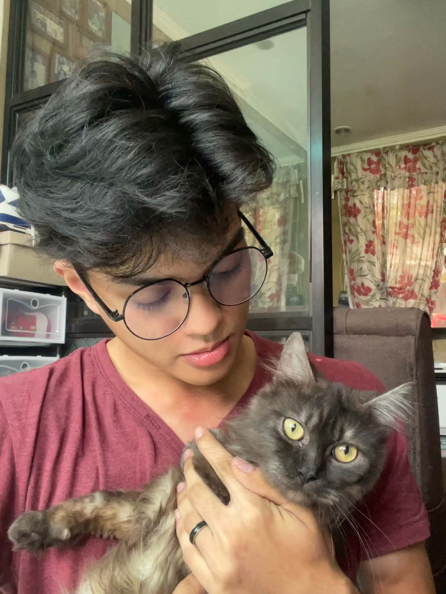

Building code. Breaking things on purpose to learn how they work. I'm a computer engineering student exploring the space between hardware, software, and the web.

Linden is a Computer Engineering student at the Polytechnic University of the Philippines – Sta. Mesa, with hands-on experience in networking, cabling, and troubleshooting alongside his software work.
He has built and collaborated on projects ranging from Python games to full operating-system and data-structure simulators, and is currently expanding into Next.js while learning to bridge hardware fundamentals with modern web development.
This outlines my educational background and the academic path I've followed to get here.
Polytechnic University of the Philippines – Sta. Mesa
Our Lady of Fatima University